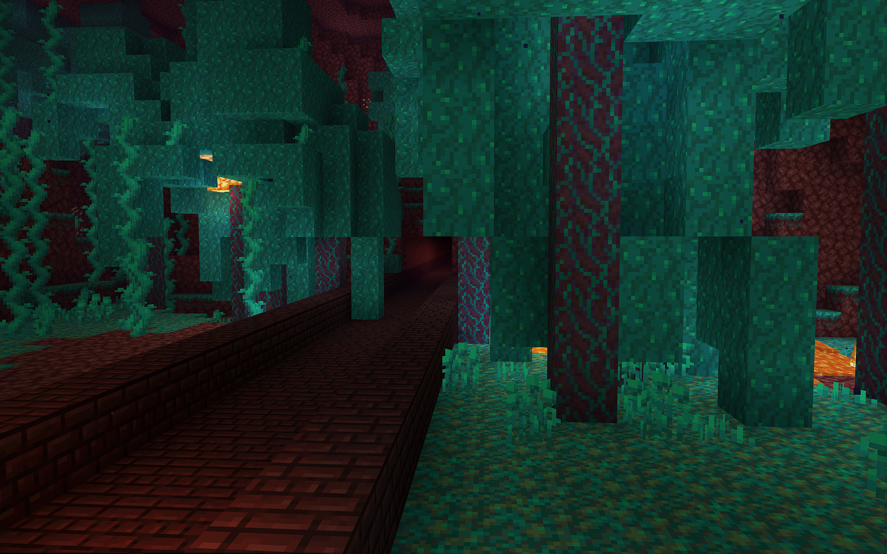
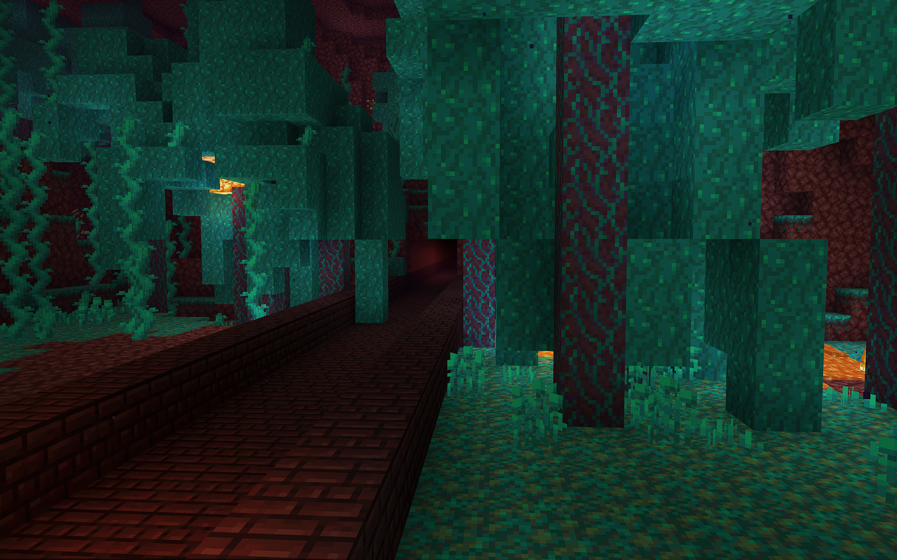

The environment in this 3D sandbox game involves an open world made of voxels I can customize however I like, and play however I like. I discovered Minecraft Lite (free mobile version with limited features) by playing it on my parents’ iPhone 3 after my brother began to play it. Even with such limitations I became obsessed with the game and its landscapes, style, music, sound effects, and overall feel. I played it on Xbox and eventually PC. I have some special memories I hold close to me of sitting on the floor, staring at the screen while playing it on Xbox with my two older siblings, and arguing over controllers as siblings do. We mostly would play the tutorial worlds, and there’s one world with a castle that I’m thinking of where we had completed the tutorial part then switched to creative and started building rollercoasters and exploding things. We also had some classic arguing over turns to play since we only had two Xbox controllers. Once I had the PC version of Minecraft was when I really locked in, and I didn’t think it could be so fun playing by myself but I enjoyed it so much. Some things I love about Minecraft is how I don’t necessarily have to “win” to play it, there’s low pressure and I customize game settings to how I like. I can do singleplayer or multiplayer, I could join public servers and play there too, and it’s very easy for me to be mesmerized by a game like this. There’s also a bit of animosity towards potential “game lore” and what it may mean which allows players to come up with their own bits of storytelling or conclusions to answer the many questions they have. Many people say they feel creeped out when playing Minecraft alone, sometimes I do but I don’t necessarily hate creepiness in games and I think it adds to the experience. I try to play Minecraft whenever I can and really have some free time
want to know more about this game?
Minecraft Wiki